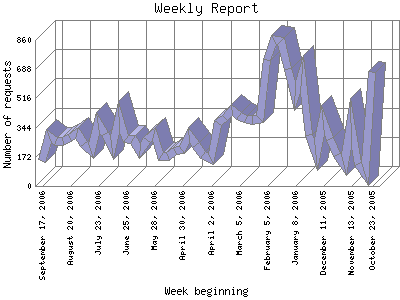

The Weekly Report identifies the activity for each week within the report
time frame. Remember that one page hit can result in several server requests
as the images for each page are loaded.
Note: Depending on the
report time frame for this report the first and last week may not represent
a full seven day week, resulting in lower hits.

| Week beginning | Number of requests | Number of page requests | |
|---|---|---|---|
| 1. | October 23, 2005 | 670 | 92 |
| 2. | October 30, 2005 | 72 | 18 |
| 3. | November 6, 2005 | 132 | 30 |
| 4. | November 13, 2005 | 374 | 32 |
| 5. | November 20, 2005 | 126 | 17 |
| 6. | November 27, 2005 | 182 | 26 |
| 7. | December 4, 2005 | 277 | 44 |
| 8. | December 11, 2005 | 389 | 59 |
| 9. | December 18, 2005 | 183 | 42 |
| 10. | December 25, 2005 | 298 | 45 |
| 11. | January 1, 2006 | 660 | 90 |
| 12. | January 8, 2006 | 528 | 80 |
| 13. | January 15, 2006 | 692 | 97 |
| 14. | January 22, 2006 | 855 | 110 |
| 15. | January 29, 2006 | 858 | 142 |
| 16. | February 5, 2006 | 741 | 89 |
| 17. | February 12, 2006 | 396 | 50 |
| 18. | February 19, 2006 | 391 | 51 |
| 19. | February 26, 2006 | 393 | 58 |
| 20. | March 5, 2006 | 410 | 63 |
| 21. | March 12, 2006 | 450 | 79 |
| 22. | March 19, 2006 | 402 | 60 |
| 23. | March 26, 2006 | 373 | 59 |
| 24. | April 2, 2006 | 158 | 39 |
| 25. | April 9, 2006 | 182 | 41 |
| 26. | April 16, 2006 | 239 | 35 |
| 27. | April 23, 2006 | 300 | 40 |
| 28. | April 30, 2006 | 211 | 37 |
| 29. | May 7, 2006 | 204 | 39 |
| 30. | May 14, 2006 | 178 | 34 |
| 31. | May 21, 2006 | 175 | 36 |
| 32. | May 28, 2006 | 305 | 51 |
| 33. | June 4, 2006 | 270 | 52 |
| 34. | June 11, 2006 | 207 | 44 |
| 35. | June 18, 2006 | 278 | 50 |
| 36. | June 25, 2006 | 275 | 48 |
| 37. | July 2, 2006 | 406 | 60 |
| 38. | July 9, 2006 | 225 | 42 |
| 39. | July 16, 2006 | 305 | 50 |
| 40. | July 23, 2006 | 371 | 57 |
| 41. | July 30, 2006 | 207 | 42 |
| 42. | August 6, 2006 | 250 | 42 |
| 43. | August 13, 2006 | 315 | 61 |
| 44. | August 20, 2006 | 285 | 36 |
| 45. | August 27, 2006 | 268 | 44 |
| 46. | September 3, 2006 | 263 | 54 |
| 47. | September 10, 2006 | 294 | 50 |
| 48. | September 17, 2006 | 148 | 26 |
Most active week beginning January 29, 2006 : 142 pages sent.
Weekly average: 51.8979591836735 pages sent. 330.020408163265 requests handled. 372.335 TB bytes served.
This report was generated on September 20, 2006 16:08.
Report time frame October 24, 2005 19:12 to September 19, 2006 18:48.
| Web statistics report produced by: | |
| analog 5.1 | Report Magic for Analog 2.10 |